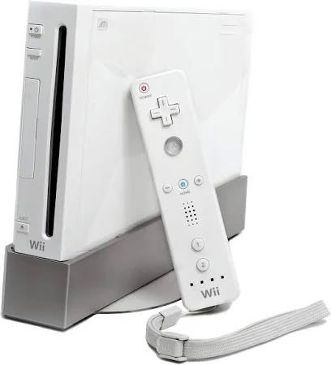
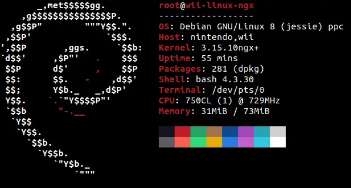
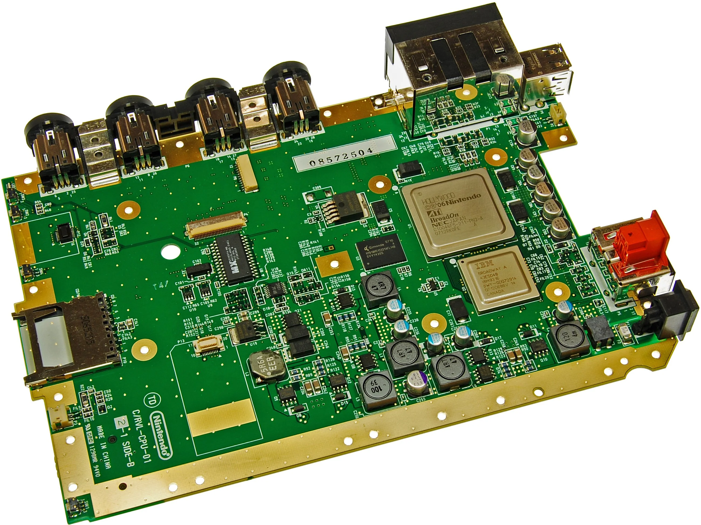

Welcome to TechCat's Nintendo Wii Web Server!

This Website is entirely running on a Nintendo Wii that is running Debian Linux, and Apache for its Web Server software.
Its possible to run Linux on the Nintendo Wii using custom Linux Distros like Wii-Linux-NGX.
The Nintendo Wii uses a PowerPC based processor, which makes it possible to run PowerPC based Linux Distros and Applications.

Specs of a Nintendo Wii:
RAM: 24+64MB (73MB Accessible in Linux)
CPU: 729 MHz (IBM PowerPC Broadway)
GPU: 243 MHz (ATI Hollywood)
Storage: 512MB NAND (SDHC w/ 32GB in Linux)
Software Specs (Linux):
OS: Debian 8.9 ppc
Linux Kernel: 3.15.10ngx+
Web Server Software: Apache 2.4.62 (Compiled From Source)
Website Made & Hosted By TechCat.